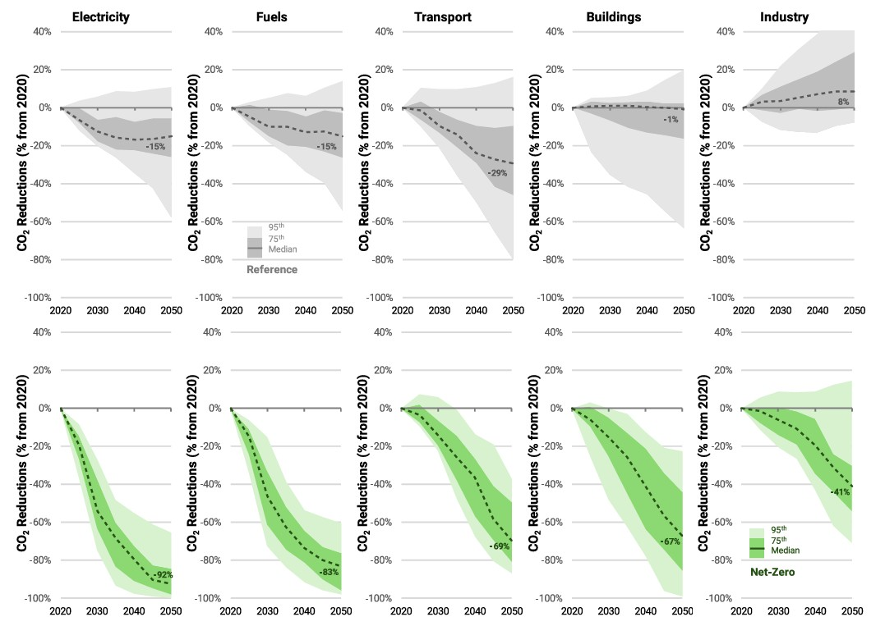

A new study published in Energy and Climate Change examines how the United States can achieve net-zero CO₂ emissions by 2050, comparing results from 14 energy-economic models.

The research identifies critical technology needs, policy pathways, and economic impacts, finding that the Inflation Reduction Act helps near-term progress, but stronger long-term policies are essential for meeting net-zero targets.
How can the United States realistically reach net-zero CO₂ emissions by 2050? A new multi-model analysis published in Energy and Climate Change tackles this critical question, revealing essential insights about the policy frameworks, technological transformations, and economic strategies required for meaningful climate action.
The study, part of the EMF 37 project, analyzes results from 14 leading energy-economic models to understand pathways to net-zero emissions in the US by 2050. Key findings show that achieving this target requires both established technologies (wind, solar, batteries, electric vehicles) and emerging solutions (carbon capture, biofuels, hydrogen, advanced nuclear). Notably, the models suggest that a complete elimination of fossil fuels isn’t necessary. Natural gas with carbon capture could still play a limited role in a net-zero future.
The economic analysis reveals significant fiscal implications, with carbon pricing revenues and removal subsidies potentially reaching 0.1% to 3.7% of GDP by 2050. Despite these policy costs, overall energy expenditures relative to GDP are projected to decrease over time due to increased efficiency and electrification, potentially reducing energy cost volatility for households and businesses.
“U.S. climate policy hasn’t been having the best time lately,” said Prof. Haewon McJeon of the KAIST Graduate School of Green Growth and Sustainability. “But as this study demonstrates, the real key to successful decarbonization lies not just in the short-term fluctuations, but in maintaining a strong, long-term trajectory toward net-zero emissions. So there’s no reason to lose hope.”
This comprehensive analysis provides critical insights for policymakers, technology developers, and climate strategists, guiding the U.S. toward effective paths to decarbonization.
[paper link]: https://doi.org/10.1016/j.egycc.2025.100191
한국어 요약
넷제로(Net-Zero) 달성을 위한 정책적 함의: 모형 비교연구를 통한 미국의 탄소배출 및 에너지 시스템 분석
과연 미국은 현실적으로 2050년까지 넷제로 CO₂ 배출을 달성할 수 있을까? 최근 Energy and Climate Change 저널에 게재된 모형 비교분석 논문은 이 중요한 질문에 답하기 위해 14개의 에너지-경제 모델을 활용해 미국의 넷제로 목표 달성 경로를 분석했다.
EMF 37 프로젝트의 일환으로 진행된 본 연구는 효과적인 기후 변화 감축을 위한 필수적인 기술, 정책 경로, 경제적 전략을 구체적으로 제시한다. 분석 결과, 2050년 넷제로 목표를 이루기 위해서는 이미 시장에서 경쟁력을 갖춘 기술(풍력, 태양광, 배터리, 전기차)의 적극적인 활용과 더불어, 아직 초기 단계에 있지만 잠재력이 큰 기술들(탄소 포집 및 저장, 첨단 바이오연료, 수소, 첨단 원자력)의 개발 및 확산이 필요하다는 사실이 밝혀졌다. 또한 연구는 탄소중립이 모든 화석연료 사용을 완전히 중단하는 것을 의미하지는 않으며, 일부 천연가스는 탄소 포집 기술과 결합하여 제한적으로 활용할 가능성이 있다는 점을 드러냈다.
탄소가격제과 탄소 제거 기술 보조금으로 인한 재정적 영향은 2050년 GDP의 약 0.1~3.7%에 이를 수 있다. 그럼에도 에너지 효율성 향상과 전기화 확대 덕분에 GDP 대비 총 에너지 지출은 오히려 감소하는 경향이 나타났다. 이것이 가정과 기업의 에너지 비용 안정화에 기여할 수도 있을 것으로 보인다.
KAIST 녹색성장지속가능대학원의 믹전해원 교수는 “요즘 미국의 기후 정책이 순탄치만은 않다” 면서도, “그렇지만 이번 연구가 보여주듯, 탈탄소화를 성공으로 이끄는 핵심은 단기적인 변화에 휘둘리지 않고, 장기적인 넷제로 경로를 흔들림 없이 이어가는 데 있다.”고 말했다.
이러한 분석 결과는 정책 입안자, 기술 개발자 및 기후 전략가들에게 실질적이고 현실적인 탈탄소화 경로를 안내하며, 미국이 성공적으로 넷제로 목표를 달성하기 위한 중요한 통찰을 제공한다.